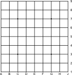

This page will allow you to create templates of gobans. You can set up some options from which this page will create the grid.
That grid can be used as a cheap goban when printed on paper. But it could also be used as a template for creating high quality prints on wood (e.g. by screen printing it).
Just right-click with your mouse in the resulting graphic and select "Save As..."
This page generates a graphical representatin of the settings you provided. The format of that graphic is SVG, a vector format. That means it can be scaled without loss of quality.
Be aware, though, that the resulting graphic should not be transformed in any way since it is generated to fit the standard dimensions for gobans. Namely:
Iis omitted.
If you encounter problems with this page, or if you have questions or suggestions, please contact me via email: Please activate JavaScript to write me an email.
Please, make your choice.
I've now publically linked the script from my static templates-page.
I've improved the code so that it does not generate SVG-tags which are not needed (namely the ones for
hoshi).
André Sieber reported a bug in my static templates which motivated me to hack this small script.